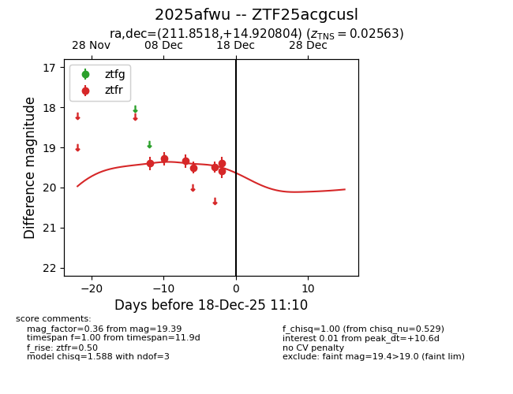
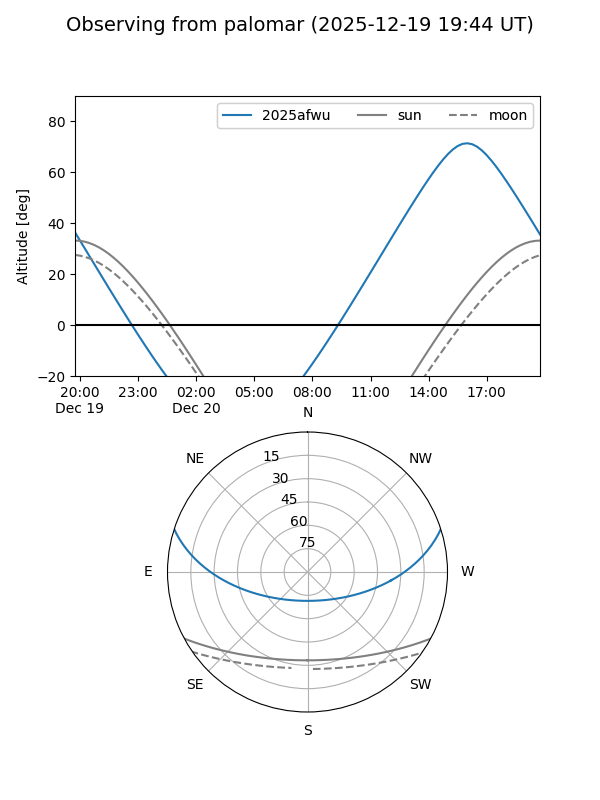
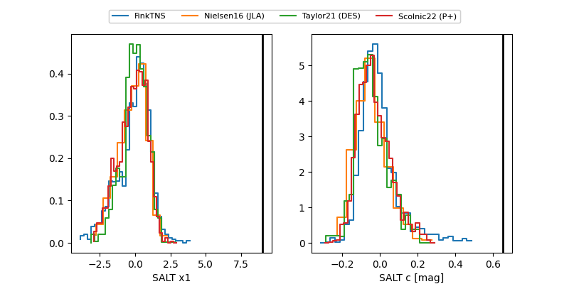

2025afwu
Target 2025afwu at 2025-12-18 11:17
Aliases and brokers:
FINK: fink-portal.org/ZTF25acgcusl
Lasair: lasair-ztf.lsst.ac.uk/objects/ZTF25acgcusl
ALeRCE: alerce.online/object/ZTF25acgcusl
TNS: wis-tns.org/object/2025afwu
YSE: ziggy.ucolick.org/yse/transient_detail/2025afwu
alt names
ZTF25acgcusl (ztf,fink_ztf)
2025afwu (tns,yse)
Coordinates:
equatorial (ra, dec) = 211.8518,+14.92080
equatorial (HMS+DMS) = 14:07:24.43,+14:55:14.89
galactic (l, b) = (2.1312,+68.52431)
Photometry
last ztfr=19.39
7 ztfr detections
Lightcurve

Visibility


Additional plots
